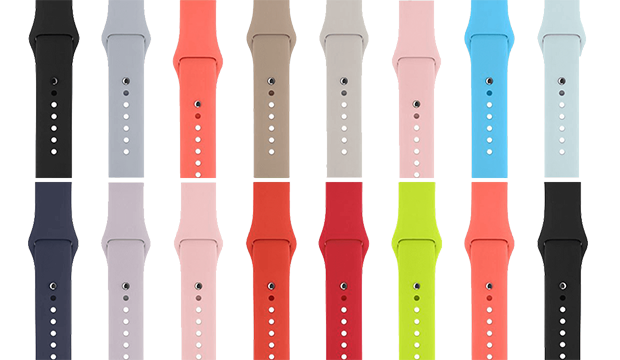

Time Watch Каждый найдёт свои
Умные подсказки про физическую активность. Усовершенствованное приложение «Пульс». Любимые плейлисты прямо на запястье. Встроенный высотомер.
купить 21$Мощное устройство для здоровья
Относитесь к своему телу с умом.Правильно выбранное приложение поможет лучше соблюдать режим, диету или медицинские предписания. На Time Watch вы можете установить самые разные полезные приложения — чтобы не забывать пить воду в течение дня, улучшить качество сна или контролировать заболевание, например диабет.
подробнееМощное устройство для здоровья
Time Watch всегда у вас на запястье, поэтому с ними легче следить за здоровьем. Вы сможете контролировать свой сердечный ритм и справляться с повседневным стрессом. И даже устанавливать дополнительные приложения, которые помогут соблюдать диету или режим.
Ваш сердечный ритм под вашим контролем. Весь день.
Time Watch измеряют частоту сокращений вашего сердца на протяжении всего дня — в состоянии покоя, при ходьбе и после упражнений. Если у вас не было физической нагрузки в течение 10 минут, а частота сердечных сокращений неожиданно превысила заданный уровень, приложение «Пульс» сразу сообщит вам об этом.
Мгновенный вызов помощи.
С помощью функции SOS вы можете быстро отправить близким экстренное сообщение, которое будет содержать данные о вашем местонахождении. При этом на дисплее часов отобразится информация, которую вы указали в разделе «Медкарта» на iPhone.
Разум успокаивается. Тело расслабляется.
Приятная анимация приложения «Дыхание» и лёгкие касания, которые вы почувствуете на запястье, помогут правильно выполнить серию глубоких вдохов. Специальные напоминания будут каждый день предлагать вам уделить несколько минут этой практике осознанности. А после упражнения вы увидите, как изменился ваш пульс.
Звонки и сообщения
Звоните, пишите, управляйте календарём
Совсем закрутились с делами? Можно отправить сообщение прямо с часов. Ответить на звонок, набрать телефонный номер или позвонить по FaceTime, используя экранные клавиши. И даже прослушать сообщения на автоответчике. А благодаря функции SOS можно быстро вызвать помощь в экстренной ситуации
Sara на Time Watch
Умнее, быстрее. И даже говорит
Попросите Sara создать напоминание. Найти ответ на нужный вопрос. Начать тренировку. Или даже просто поболтать с вами. Всё, что вы захотите узнать, Sara вам сообщит — через динамик часов или беспроводные наушники.
Разный Time Watch
Для разных настроений. С разными настройками
Настройте циферблат так, чтобы он показывал важную для вас информацию. Или ваше любимое фото. Или самые нужные приложения. При этом циферблат можно быстро сменить, смахнув по нему от края до края. Например, начните день с умным циферблатом Sara, который постоянно предлагает актуальную информацию. А когда придёт время забирать детей из школы, смените его на циферблат «История игрушек».
Выберите модель. Подберите ремешок.
Для каждого настроения найдётся ремешок. Из плетёного нейлона, спортивный
01 GPS и высотомер
Дальше, выше, быстрее.
02 Музыка
Любимые плейлисты на запястье. Мотивация на пределе.
03 Защищены от воды
Им покоряются моря. И бассейны.
04 Приложение «Тренировка»
От лёгких прогулок до интенсивных нагрузок.
Сидеть меньше. Двигаться больше. Тренироваться чаще.
Три графических кольца показывают вашу активность в течение дня и мотивируют больше двигаться. Вы сразу поймёте, что засиделись. И узнаете, сколько сделали шагов и сожгли калорий. Вам станет легче найти 30 минут в день на физические упражнения — ведь их необязательно делать за раз.
Активные подсказки. Когда пора встряхнуться.
Как настоящий личный тренер, Time Watch будут постоянно мотивировать вас. Утром вы получите отчёт о своём прогрессе, вечером — подсказку, которая поможет закрыть кольца. А на основании данных о вашей активности и тренировках часы будут каждый месяц предлагать вам новую цель.
Поразите друзей своими кольцами Активности.
Откройте друзьям и близким доступ к своим кольцам Активности, чтобы сравнивать показатели и мотивировать друг друга. Вы будете получать уведомления об их прогрессе, а они — о вашем. И сможете обмениваться мотивирующими или шутливыми сообщениями.
Празднуйте свои успехи вместе с Time Watch.
Когда вам удаётся заполнить кольцо или добиться цели, Time Watch отмечают это событие яркой полноэкранной анимацией. А за личные рекорды, серию высоких результатов и достижение основных целей вы будете получать виртуальные награды.